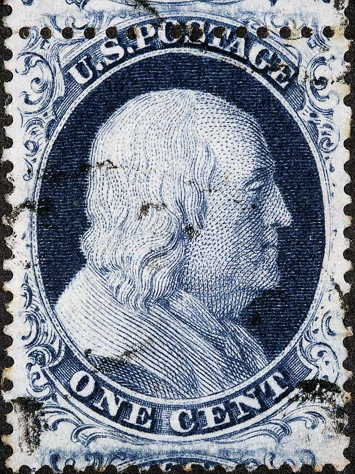
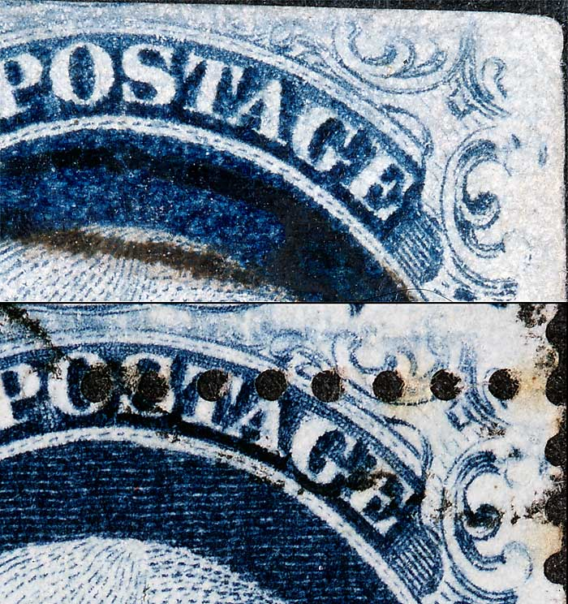
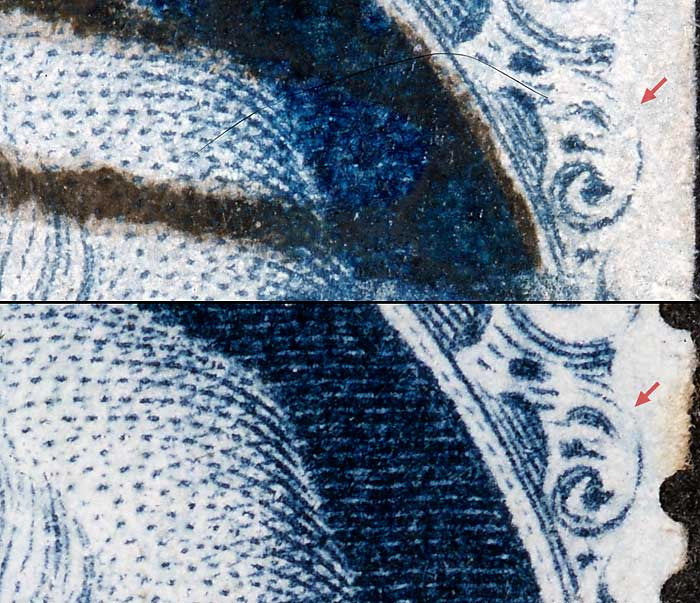
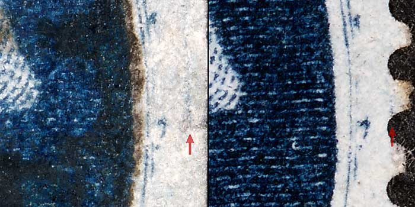
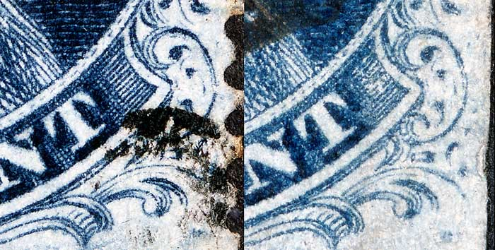

1¢ Franklin Issue of 1851-1857, PLATE 2 Position 77L2 |
| Relief A, Type II, Blue, Issued both imperforate (7) and perforated (20). Perforated copies are more scarce. Courtesy of Tyler Moody. |
|  |
| Figure 1. (Below) The plating diagram illustrates the top curved line as being weak. TA and G of POSTAGE is illustrated with plating marks and Ornaments L/M are short.
 |
| Figure 2. (Below) An interesting feature of this position is that the part of Ornament N is broken.
 |
| Figure 3. (Below) A vertical line of color in the right margin as illustrated in the Ashbrook/Neinken plating diagram.
 |
| Figure 4. (Below) The internal small leaf ornaments of Ornament R are weak and incomplete, not clearly illustrated in the Ashbrook/Neinken plating diagram but confirmed as constant.
 |
DISCLAIMER and COPYRIGHT INFORMATION: Thanks for visiting this site. I hope you learn something new as we are making new discoveries all the time. You, the visitor, have my permission to link to my pages and to share the INFORMATION with others. The images themselves fall under the fair use guidelines established by the United States Congress and Copyright law. Basically contact us before using. I also ask in return that you send me an e-mail if I have made a mistake, or have made some other technical blunder that in my rush to put these pages up would cause the visitor confusion. Please also visit my other website at www.slingshotvenus.com. and support the live music arts. While your there, be sure to purchase our music. There are not many philatelic rock stars around and we need all the help we can get. :-) I can be reached at: nerdman@ix.netcom.com Update 5.28.2010 |